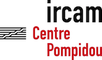
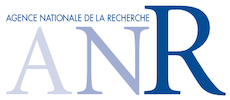
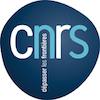

January 26-27, 2015 - IRCAM & Mozilla Paris, France
WAC is the first international conference on web audio technologies and applications.
The conference welcomes web R&D developers, audio processing scientists, application designers and people involved in web standards.
The conference addresses research, development, design, and standards concerned with emerging audio-related web technologies such as Web Audio API, Web RTC, Web Sockets, and Javascript.
Recently, the Internet has become much more than a simple storage and delivery network for audio files. Moreover, modern devices such as smartphones and tablets bring new user experiences and interactions opportunities.
Web technologies and standards allow applications to manipulate sound and transform the browser into a digital audio workstation, capable of real-time audio processing. These web applications come closer to competing real-time desktop applications and can exceed them regarding social integration and user experience, hence fostering a large creative area for new services and games in the context of pedagogical, artistic and commercial projects.
This first edition of WAC addresses issues on audio and music research applied to new web technologies:
Innovative audio and music based web applications (with social and user experience aspects)
Client-side audio processing (real-time or non real-time)
Audio data and metadata formats and network delivery
Server-side audio processing and client access
Client-side audio engine and rendering
Frameworks for audio manipulation
Web Audio API design and implementation
Client-side audio visualization
Multimedia integration
Web standards and use of standards within audio based web projects
Hardware, tangible interface and use of Web Audio API
All submissions must be done through EasyChair following the ACM template (alternate style). The conference proceedings will be published (via CEUR workshop proceedings).
June 10, 2014: Call for submission
WAC gives you three opportunities to actively participate to the event and present your work around the use of the Web Audio API
Technical papers - 2 to 8 pages
Selected papers will be subject to a 20 minutes communication
Demo / Poster - 1 to 4 pages
Selected demos and posters will be presented by their authors in a dedicated room
Web Audio Gig - involving usage of the Web Audio API and "audience devices participation"
1 or 2 pages with artistic presentation of the proposed gig for a 20 minutes performance, with description of the audio equipment needed and related audio materials.
Selected gig will take place the Tuesday evening. Give free rein to your imagination !
October 10, 2014: Deadline for submission
November 10, 2014: Notification
December 10, 2014: Camera ready
Practical info
Registration Fees
Regular: Early 150€, Late 200€
Student: Early 100€, Late 120€
Provisional program
Monday 26, Tuesday 27 morning
Communication for accepted technical papers and keynotes - Stravinsky auditorium, Ircam
Tuesday 27 afternoon
Demo and Poster session - French Mozilla office
Tuesday 27 evening
Web Audio Gig - French Mozilla office
Subject to validation: a hackathon will be held on Wednesday 28 (at Ircam or Mozilla)
Venues
Ircam (Centre Pompidou)
1, Place Igor Stravinsky, 75004 Paris, France
Subway: Hôtel de Ville, Rambuteau, Châtelet, Les Halles
Phone: +33 1 44 78 48 43 | +33 1 44 78 15 45
Mozilla
16bis Boulevard Montmartre, 75009 Paris, France
Subway: Grands Boulevards, Richelieu-Drouot
Raphaël Troncy (Eurecom, W3C MediaFragment Working Group)
Manuel Serrano (Inria)
Chris Wilson (Google)
Local Organization Commitee
Ircam – STMS joint research unit with CNRS and Université Pierre et Marie Curie – Paris
Sylvie Benoit, Ircam, Paris, France
Samuel Goldszmidt, Ircam, Paris, France
Victor Saiz, Ircam, Paris, France
Norbert Schnell, Ircam, Paris, France
Hugues Vinet, Ircam, Paris, France
Partners and Sponsors
ANR - WAC is part of the WAVE project, funded by the French National Research Agency
Want to be a sponsor of the event ? Contact us: wac [at] ircam [dot] fr



Review process
All submissions will be peer-reviewed by the above international expert technical committee.
After authors submit their paper, it will go through a rigorous single blind review process that comprises two layers of evaluation: Chairs and technical commitee members.
The chairs reserved the right to eliminate submissions that do not follow the submission instructions (format, etc.) or that do not match any of the conference themes.
The chairs assign each paper to at least 3 carefully selected technical commitee members who are a representative of the research topic of the paper. The chairs will avoid conflicts of interest when assigning the paper to the technical commitee members.
The technical commitee members will provide a review according to a set of criteria including: innovation, reference to prior work, clarity of presentation, methodological rigor, importance of contribution and relevance to the conference, source code available, multimedia - sound/video - content available, use of the Web Audio API and other W3C standards, and for Web Audio Gig, equipment involved is detailed (mixiing console, spearkers ...).
The chairs gather all the reviews, writes a meta-review based on the reviewers’ comments in order to finalize a decision for each paper. The chair may ask further details to a reviewer in case of conflict of if the produced comments are too concise.
Confidentiality of submissions is maintained for the technical commitee members during the review process. All rejected submissions will be kept confidential in perpetuity.